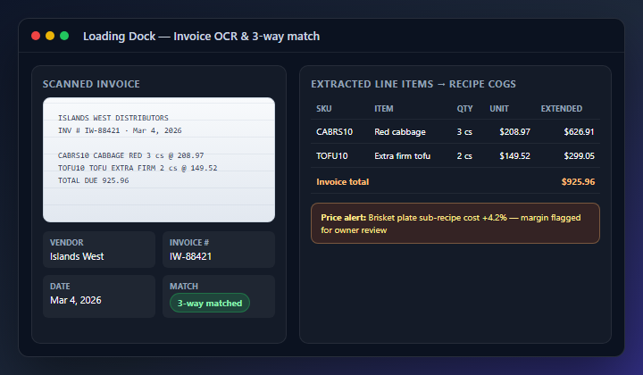

The AI command center for independent restaurants
Pinnacle turns operating data — invoices, recipes, labor, and sales — into daily profit decisions before month-end closes.
Seed · $750K · $79–$449/location/mo · Live demo on request
Pinnacle Designs LLC · pinnacle-restaurant-manager.vercel.app · Investment: david@pinnacle-designs.com
Independent restaurants lose margin in the gap between what happened on the floor and what the owner sees in spreadsheets
Fragmented stack
POS, scheduling, inventory, and accounting don't share one source of truth.
Margin leaks
Vendor price drift, waste, and labor overshoot surface after the P&L — too late to fix.
No daily answer
Owners export CSVs instead of asking "what's hurting profit this week?"
Operator discovery confirms the pain — and the wedge we built first
"I find out food cost moved when the accountant calls — not when the vendor invoice lands."— Full-service owner, 85 seats, Austin TX
"MarginEdge handles the invoice, but it doesn't talk to my menu or labor."— GM, 2-location group, Denver CO
"I need one place that tells me what to fix today, not another dashboard."— Independent operator, 60 seats, Nashville TN
Stacks we replace or consolidate
- POS: Toast, Square, Clover
- Labor: 7shifts, spreadsheets
- Food cost: MarginEdge, xtraCHEF, manual
- Back office: Restaurant365, QuickBooks exports
- Menu/channels: Manual + delivery tablets
12+ US full-service operator interviews (2025–2026). Quotes anonymized; update with named references as pilots convert.
Bottom-up: full-service independents and 2–10 location groups are an underserved $2B+ software wedge
| Layer | Calculation | Estimate |
|---|---|---|
| TAM | ~660K US restaurant units × ~$3.6K/yr avg software spend | ~$2.4B US restaurant ops software |
| SAM | ~230K US full-service independents + small groups × $3–6K/yr | ~$690M–$1.4B |
| SOM (3 yr) | 500 loc × $3K ARPU · software wedge ceiling, not a seed-round target | ~$1.5M ARR at scale |
Why now
AI can answer owner questions from live ops data — not generic benchmarks.
Why independents
70% of US locations are independent or franchisee-operated — underserved by enterprise POS bundles.
Why profit visibility
Post-COVID margin pressure makes daily COGS and labor visibility a buying trigger.
Sources: National Restaurant Association Facts at a Glance (2024–2025, ~1M US foodservice locations); USDA ERS food-away-from-home; internal ARPU from published POS/back-office pricing (Toast, R365, MarginEdge). Bridge to financial plan: slides 13–14 model 18 months ($150K base / $430K upside ARR); 3-yr SOM assumes scaled acquisition after retention proof — see appendix.
Pinnacle turns restaurant operating data into daily profit decisions — one login, one data model
- Invoice OCR + live COGS — hardest to copy; compounds with menu and labor data
- AI Command Center — cross-domain profit answers from your orders, waste, and vendor prices
- Connected platform — POS, KDS, payroll, and menu sync feed the same insight layer (not six separate pitches)
What we are not claiming day one
Out-scaling Toast on payment reliability. We win on owner profit visibility first — checkout integrates, it is not the wedge.

Live product — invoice OCR extracts line items, matches PO/receipt, and rolls costs into menu margin alerts
One week in the life: vendor price change → margin alert → owner action
Invoice scanned at the loading dock
OCR extracts SKU, qty, and unit price · 3-way match against PO · inventory and recipe costs update automatically
Brisket cost rises 11%
Sub-recipe roll-up changes menu margin on the brisket plate across POS and delivery channels
AI Command Center flags the leak
"Brisket plate margin dropped 4 pts — vendor price + prep waste up." Suggested: adjust menu price or swap portion
Owner updates price / channel markup
Menu engineering matrix shows star vs. dog · changes sync to QR and delivery menus
Weekend rush with clearer prep and labor plan
Labor vs. sales visible live · no CSV export · no waiting for the accountant
Smoky Oak BBQ = demo tenant with sample data (not a paying customer). Operator sandbox = isolated test environment where real vendor invoices are scanned and matched weekly.
Three forces make daily profit visibility buyable now — not in a future roadmap slide
AI on private data
LLMs can synthesize cross-domain answers when POS, invoices, and labor share one database.
API-first integrations
Stripe, Square, QuickBooks, and delivery channels are connectable without a services army.
Margin pressure
Operators must manage food and labor daily — monthly P&L-only tools are too slow.
Founding-10 go-to-market
Founding-10 path: embedded demo → operator pilot → referral loop
Launch-ready — first operator pipeline forming
Vercel deploy · Stripe billing · onboarding wizard · multi-tenant isolation
Growth-plan scope · $149/mo for life (40% off $249 list) · referral loop
Pitch-request form · admin-reviewed deck delivery
Isolated environment — weekly real invoice OCR and loading-dock workflows
3 pilots · 5 LOIs · 20 demos · 3 written testimonials
Live app preview on marketing site · full walkthrough on request
Per-location SaaS with obvious payback — one point of food cost on revenue pays for Growth
Starter
$79/mo
Dashboard, menu, tables, basic inventory
Growth
$249/mo
KDS, menu engineering, labor, AI Command Center
Pro
$449/mo
Full analytics, purchasing, payroll, integrations
Group
$599+ $249/loc
2–10 locations · roll-up reporting
Founding-10: Growth-plan scope at $149/mo for life (40% off $249 list) for the first 10 customers.
Founding-10 program + embedded demo + regional operator groups
- Target: full-service independents (50–200 seats) and 2–10 location groups upgrading from POS + spreadsheets
- $300K GTM: founder-led sales · Month-3 CS hire · onboarding · demos · operator success — AE only after repeatable conversion
- Early success bar: 90%+ onboarding completion and referenceable retention before AE hire or paid ads
Founding-10 pricing: $149/mo locks Growth-plan scope at 40% off standard $249/mo list.
Pinnacle's wedge: live profit intelligence across invoices, menu, labor, and sales — not checkout alone
| Category | Incumbent | Gap | Pinnacle |
|---|---|---|---|
| Checkout & payments | Toast, Square | Strong at register scale & brand trust | Integrates — not trying to out-scale day one |
| Invoice → food cost | MarginEdge, xtraCHEF | Invoice-only; weak menu/labor tie-in | OCR + recipe roll-up + alerts |
| Back office / accounting | Restaurant365 | Heavy implementation; owner UX | Daily owner command center |
| Labor scheduling | 7shifts | Siloed from margin story | Labor in same profit model |
| Menu / delivery sync | Chowly, Olo, manual | Channel sync without COGS loop | Price change → margin view |
| AI owner Q&A on live data | Rare / add-ons | Generic or exported data | Native Command Center |
Solo founder today — full-stack builder with operator discovery and founder-led sales
David Foy
Founder & CEO · sole operator today
Built from 12+ US operator conversations and live workflow testing in our operator sandbox (invoice OCR, loading dock, margin alerts). Ships product, runs demos, and closes founding operator conversations personally.
- Why one founder shipped this: modular architecture, AI-assisted engineering velocity, and a single data model across modules — not six startups glued together
- Production SaaS: Stripe billing, invoice OCR, AI Command Center, tenant-scoped security, Vercel deploy
- Month-3 hire: Head of Customer Success (funded) — founder stays on product + founder sales through first 10 locations
Bus factor — addressed honestly
Solo today. Mitigation: documented codebase, hosted infra, CS hire at Month 3, and advisor relationships in restaurant ops and SaaS finance.
Advisor — restaurant operations
Sam Ramseyer — former multi-unit independent operator (4 locations, full P&L ownership). Advises on operator workflows, onboarding, and GTM with regional restaurant groups.
Security & trust
Multi-tenant isolation · Stripe-hosted checkout (no raw card storage) · Square/Stripe Connect for guest payments · role-based access · tenant-scoped API layer
18-month financial plan — conservative base and upside path
| Milestone | Base case | Upside |
|---|---|---|
| Month 6 | 10 loc · $24K ARR | — |
| Month 12 | 50 loc · $150K ARR | 80 loc · $270K ARR |
| Month 18 | 75 loc · $240K ARR | 120 loc · $430K ARR |
Seed round targets month 12. Year 3 illustrative path: ~200 loc ($670K) base · ~500 loc ($1.5M) SOM ceiling — post-retention GTM scale.
ARR ramp — base case
Planning assumptions: founder-led GTM through month 12 · CS hire at month 3 · avg ~$250/mo realized ARPU at month 12.
Raising $750,000 to convert a launch-ready product into 50+ paying locations and proven retention
Live demo: available on request — david@pinnacle-designs.com
Product: pinnacle-restaurant-manager.vercel.app · Confidential — Pinnacle Designs LLC
Appendix: bottom-up market math and sources
| Input | Method | Source / assumption |
|---|---|---|
| ~660K units | US foodservice locations minus limited-service QSR | NRA Facts at a Glance (~1M total); ~34% QSR excluded → ~660K addressable units |
| ~$3.6K/yr ARPU | Blended ops software spend per location | Toast, R365, MarginEdge list pricing — mid-market independent blend |
| ~230K units | Full-service independents + 2–10 location groups | NRA segments + USDA independent share (~70%); filtered to invoice-driven COGS buyers |
| $3–6K/yr ARPU | Growth/Pro/Group weighted mix | Starter is entry tier only; SAM ARPU reflects target buyers on Growth+ plans and group roll-ups |
| 500 locations | 3-yr wedge ceiling, not seed target | Post-retention GTM scale; seed plan tops at $240K–$430K ARR by month 18 |
References: NRA Restaurant Industry Facts at a Glance (2024–2025) · restaurant.org/research-and-media/research/research-reports/restaurant-industry-facts-at-a-glance · USDA ERS food-away-from-home tables · ers.usda.gov · Competitor pricing: Toast, Restaurant365, MarginEdge (March 2026).